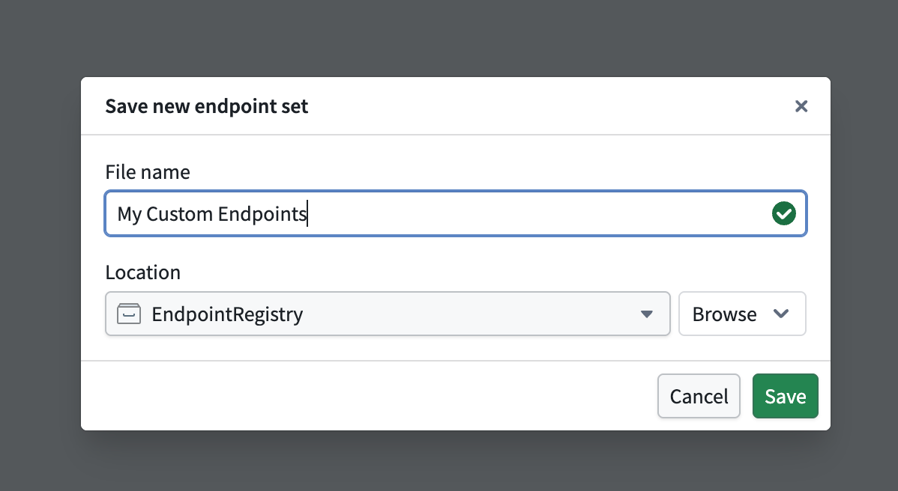
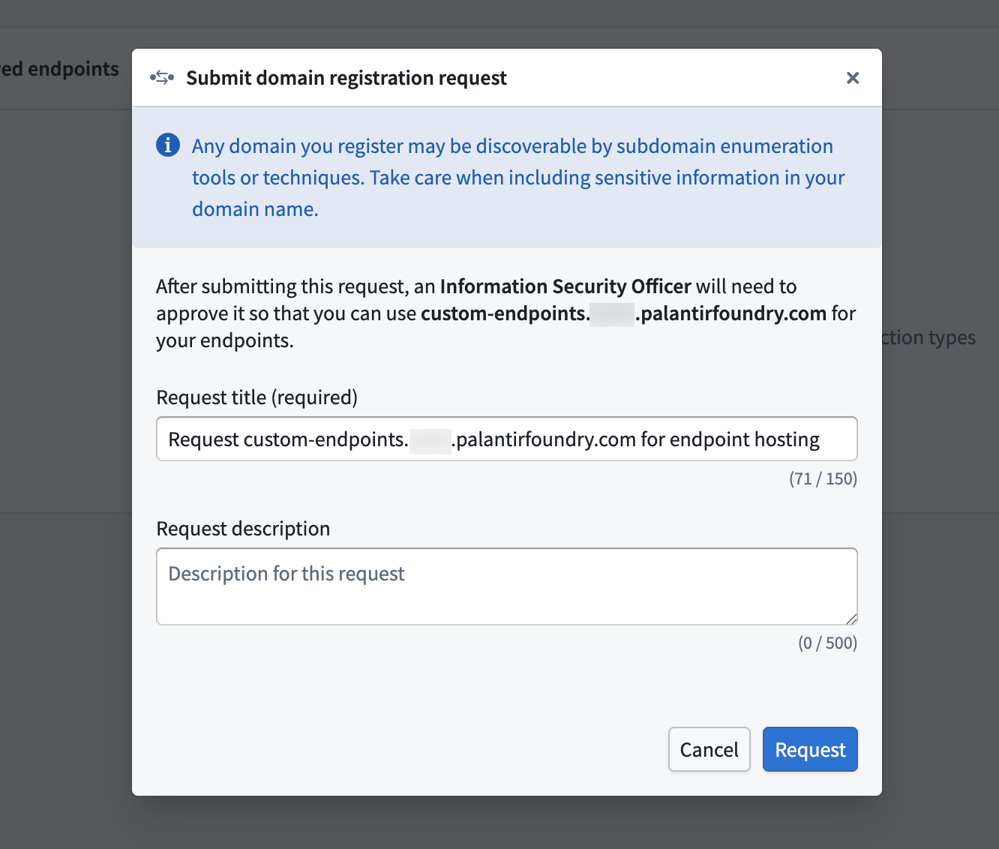
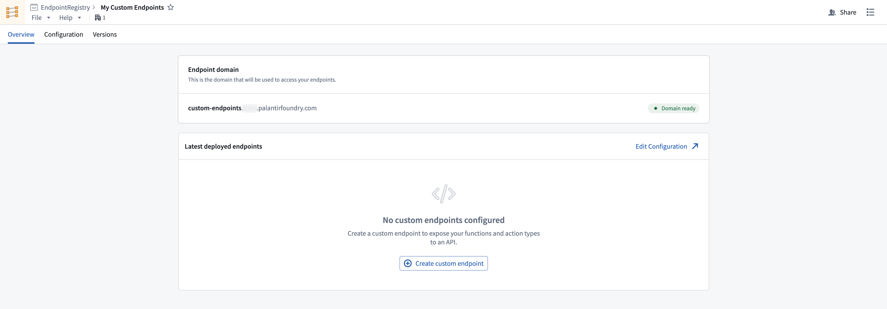

Create an endpoint set
Follow the instructions below to create a new endpoint set:
- Select Files from the workspace navigation bar and find your desired project or folder.
- Select New > Endpoint set in the top right to create a new endpoint set in the current project or folder. The new endpoint set will inherit permissions from its parent project or folder.

- In the Save new endpoint set dialog, input a name for your endpoint set and save it. This creates a new empty endpoint set resource.

Register a subdomain to host your endpoints
In production workflows, all custom endpoints are served from a user-specified subdomain. This subdomain acts as the host for your endpoint set release, enabling access to deployed endpoints that execute foundry logic.
To request a new endpoint hosting subdomain, follow the instructions below:
- Navigate to Overview > Endpoint domain in your selected endpoint set, and specify a subdomain name.
- Select Request endpoint hosting domain in the top right and acknowledge the instructions to create a subdomain registration request.

- Await approval for your subdomain registration request from your enrollment administrator.
After registering and receiving approval for your subdomain, you should see a Domain ready tag next to your deployed subdomain. While waiting for approval, you can continue to configure and test your endpoint definitions. Review the custom endpoint definition documentation for more details.
